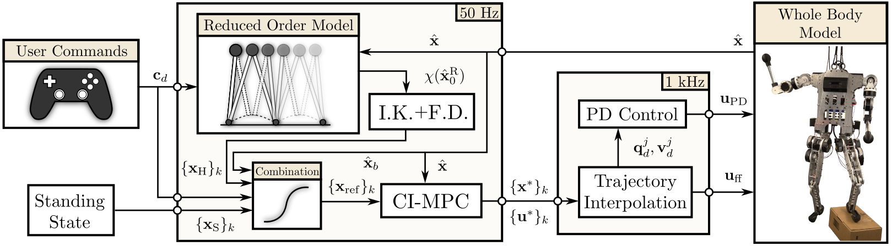

Humanoid robots have great potential for real-world applications due to their ability to operate in environments built for humans, but their deployment is hindered by the challenge of controlling their underlying high-dimensional nonlinear hybrid dynamics. While reduced-order models like the Hybrid Linear Inverted Pendulum (HLIP) are simple and computationally efficient, they lose whole-body expressiveness. Meanwhile, recent advances in Contact-Implicit Model Predictive Control (CI-MPC) enable robots to plan through multiple hybrid contact modes, but remain vulnerable to local minima and require significant tuning. We propose a control framework that combines the strengths of HLIP and CI-MPC. The reduced-order model generates a nominal gait, while CI-MPC manages the whole-body dynamics and modifies the contact schedule as needed. We demonstrate the effectiveness of this approach in simulation with a novel 24 degree-of-freedom humanoid robot: Achilles. Our proposed framework achieves rough terrain walking, disturbance recovery, robustness under model and state uncertainty, and allows the robot to interact with obstacles in the environment, all while running online in real-time at 50 Hz.

Our control architecture combines the HLIP with CI-MPC. The HLIP tracks user specified velocity commands and then, via inverse kinematics and finite difference, we obtain a state trajectory where after combination produces a trajectory for the legs. CI-MPC tracks this trajectory that is interpolated and passed to low-level control of the robot.
Our proposed method enables natural walking. Since HLIP by itself works with a fixed contact schedule and stability depends on step-to-step dynamics, we get periodic marching even at zero velocity. Additionally, the HLIP natively does not encode any motion for the arms. HLIP fails at low height walking. CI-MPC by itself yields foot dragging and at higher velocities, converges to unpredictable periodic behavior. Our proposed method however, is able to walk naturally at a range of velocities and heights. integrating the HLIP with CI-MPC allows us to regulate the unpredictable behavior of CI-MPC while benefiting from the HLIP's robust step-to-step stability via foot placement.
Our proposed method enables multi-contact walking. HLIP by itself is limited to a single contact mode for each foot since it only considers point feet. The flexibility of CI-MPC allows exploration of different contact modes. By leveraging this flexibility, gaits produced by our method considers contact sequences for every collision geometry.
Our proposed method improves disturbance recovery. We consider recovery to pushes in directions in the horizontal plane of maginute 50 N. Our proposed method recovers from these disturbances by adjusting the contact schedule to maintain stability. While tracking a velocity command, the robot deviates from a nominal orbit and returns to the orbit after recovery from the disturbance. Since CI-MPC can reason about multiple contact modes, it can adjust the contact schedule of the hands to interact with the environment (i.e., the wall).
Robustness over unknown terrain. Foot placement from the HLIP allows for stability of the robot and the whole-body consideration from the CI-MPC allows for deformation of the feet over the unknown terrain and arm swinging to help maintain balance.
Whole-body coordination is observed in a highly dynamic setting. We drop the robot from a height of 1.0 m at a forward velocity of 1.0 m/s. The robot ccordinates its whole-body by swinging its arms and bending its knees to absorb the impact. Although there is little to no influnce from the HLIP, CI-MPC is leveraged for its whole-body coordination capabilities and decides the landing times of the feet.
If you find this work useful, please consider citing it as:
@article{esteban2025reduced,
title={Reduced-Order Model Guided Contact-Implicit Model Predictive Control for Humanoid Locomotion},
author={Sergio A. Esteban and Vince Kurtz and Adrian B. Ghansah and Aaron D. Ames},
journal={arXiv preprint arXiv:2502.15630},
year={2025}
}